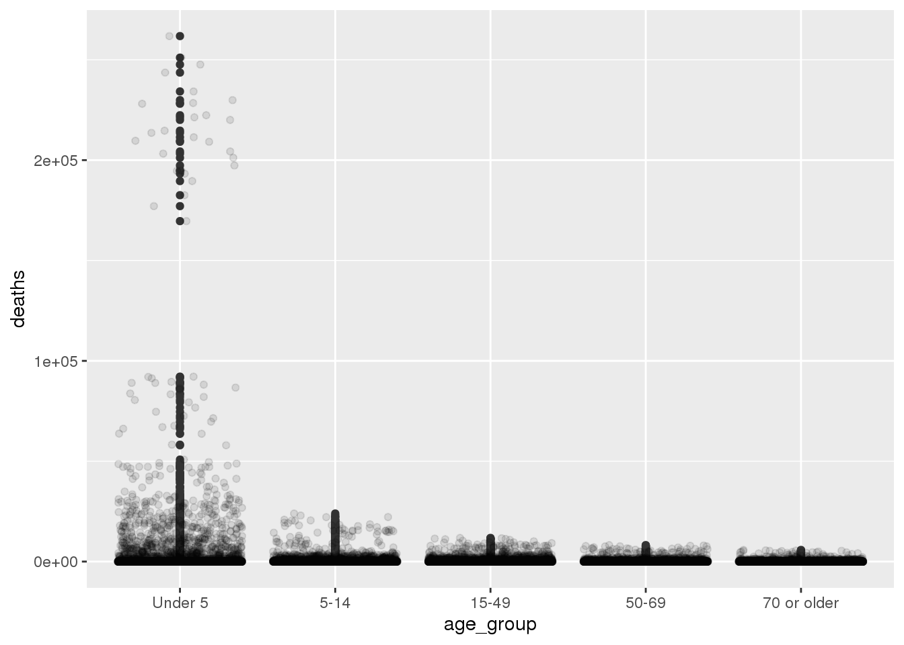
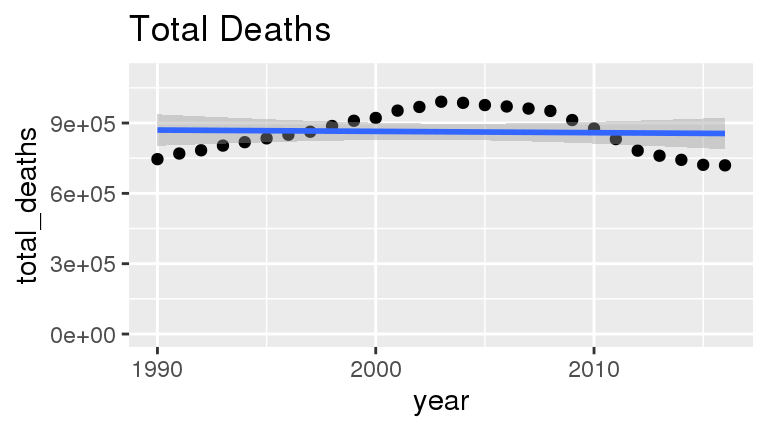
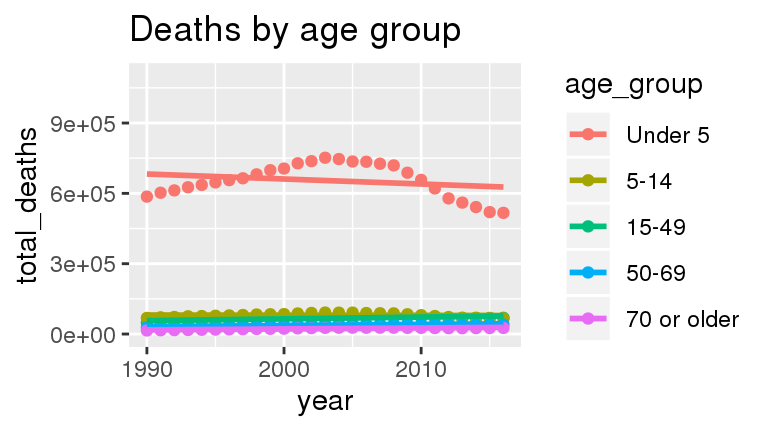
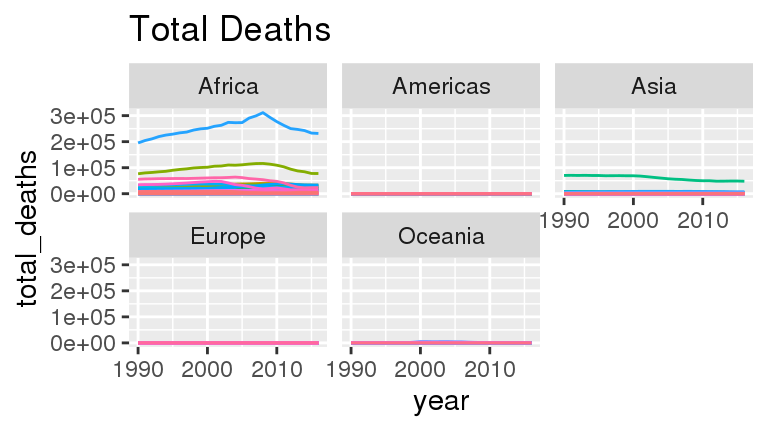
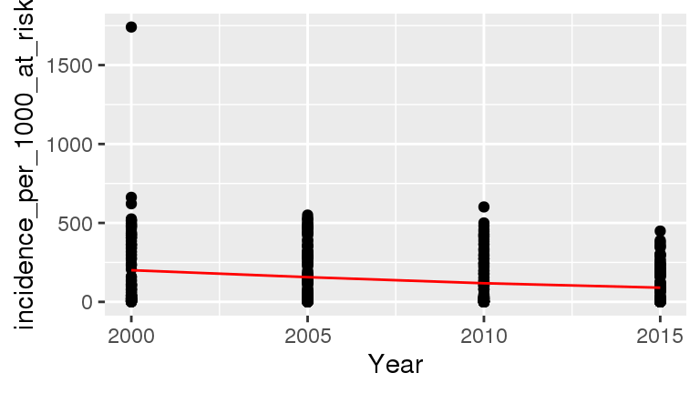
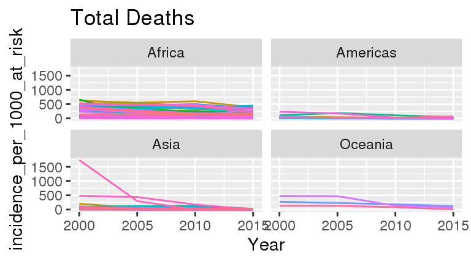

Malaria deaths
For this project, I am examining the malaria deaths by age dataset contained in the malaria_deaths_age.csv file on the Tidy Tuesday website. The data consists of 30780 observations of 5 variables. The variable entity is a factor with 228 levels that represents the region for the deaths. The variable code is a factor with 196 levels which represents a three letter code for the country/region. The variable year is a discrete integer variable that records the years between 1990 and 2016. The variable age_group is a discrete ordered factor with 5 levels that groups the population into age groups under 5, 5-14, 15-49, 50-69 and 70 or older. The variable deaths records the number of deaths from malaria for each region, year, and age group. Initial exploration shows that the largest variability in the number of deaths occurs across age groups with the largest number of deaths occurring in children under 5. Other variability in deaths occurs when examining death rates by region.
The second dataset we use to understand malaria is the incidence rate of malaria given in the malaria_inc.csv file on the Tidy Tuesday website. The malaria incidence rate is the average number of people who contract malaria per 1000 people at risk. The malaria incidence dataset has 508 observations of 4 variables: the variable Entity, which is a factor with 127 levels, that represents the region for the malaria cases, the variable Code, which is a factor with 101 levels, that represents a three letter code for the country/region, the variable year, which is a discrete integer variable that records the years between 2000 and 2015 in an interval of 5 years, and the variable Incidence which records the number of malaria cases per 1000 people at risk.
To perform our analyses, we need to filter out the data that does not come from a country. These include the following:
Question 1:
First, is there a significant difference in malaria deaths by age group. If so, which groups are different. First, we summarize the annual deaths by age group.
## factor in increasing ages
age_levels <- c("Under 5", "5-14", "15-49", "50-69", "70 or older")
dat2 %>%
mutate(age_group = fct_relevel(age_group, age_levels)) %>%
filter(!(entity %in% non_countries)) %>%
group_by(age_group) %>%
summarize(total_deaths = sum(deaths),
sd_deaths = sd(deaths),
count = n()) %>%
mutate(prop_deaths = total_deaths / sum(total_deaths))## # A tibble: 5 x 5
## age_group total_deaths sd_deaths count prop_deaths
## <fct> <dbl> <dbl> <int> <dbl>
## 1 Under 5 17679161. 17044. 5373 0.759
## 2 5-14 2161707. 1755. 5373 0.0928
## 3 15-49 1810052. 1102. 5373 0.0777
## 4 50-69 1016814. 689. 5373 0.0437
## 5 70 or older 624677. 437. 5373 0.0268From the summary table, we see that the Under 5 age group is the largest proportion of deaths (76.7%) with the next highest death rate fo the 5-14 age group. The dataset shows that there is a very large amount of variability around total deaths. Next, we visualize this result to better highlight the differences. However, the data is really hard to visualize on the original data scale.
dat2 %>%
mutate(age_group = fct_relevel(age_group, age_levels)) %>%
filter(!(entity %in% non_countries)) %>%
mutate(age_group = fct_relevel(age_group, age_levels)) %>%
filter(!(entity %in% non_countries)) %>%
ggplot(aes(x = age_group, y = deaths)) +
geom_boxplot() +
geom_point(position = "jitter", alpha = 0.1)
There seems to be a pretty interesting grouping happening. Maybe this is related to country/region?
Question 2:
Second, I want to test whether the death rate from malaria changed over time?
dat2 %>%
filter(!(entity %in% non_countries)) %>%
group_by(year) %>%
summarize(total_deaths = sum(deaths)) %>%
ggplot(aes(x = year, y = total_deaths)) +
geom_point() +
stat_smooth(method = "gam") +
ylim(c(0, 1100000)) +
ggtitle("Total Deaths")
## plot time varying response
dat2 %>%
filter(!(entity %in% non_countries)) %>%
group_by(year, age_group) %>%
summarize(total_deaths = sum(deaths)) %>%
mutate(age_group = fct_relevel(age_group, age_levels)) %>%
ggplot(aes(x = year, y = total_deaths, group = age_group, color = age_group)) +
geom_point() +
stat_smooth(method = "gam", se = FALSE) +
# stat_smooth(method = "lm") +
ylim(c(0, 1100000)) +
ggtitle("Deaths by age group")
From these graphics, it appears that there is a change in total deaths over time, with an increase in young child mortality until the mid 2000s and then a relatively rapid decrease in child mortality in the late 2000s and 2010s.
To get a better understanding of the mortality patterns, I will plot the total mortality by country. To visualize this, I will group the country-level data by region.
dat2 %>%
filter(!(entity %in% non_countries)) %>%
left_join(dat_codes, by = c("code" = "alpha-3")) %>%
group_by(year, entity, region) %>%
## remove the NA values corresponding to the British Isles
filter(!is.na(region)) %>%
summarize(total_deaths = sum(deaths)) %>%
ggplot(aes(x = year, y = total_deaths, group = entity, color = entity)) +
geom_line() +
facet_wrap(~ region) +
ggtitle("Total Deaths") +
theme(legend.position = "none")
Form this graphic, we can see that the African continent has been the primary driver of Malaria deaths with some deaths in Asia. We also see a large drop in Malaria deaths in the mid 2000s for many African countries.
This leads to an interesting question: What are the countries that have had the highest Malaria deaths during the study period?
dat2 %>%
mutate(age_group = fct_relevel(age_group, age_levels)) %>%
filter(!(entity %in% non_countries)) %>%
group_by(entity) %>%
summarize(total_deaths = sum(deaths)) %>%
arrange(desc(total_deaths))## # A tibble: 199 x 2
## entity total_deaths
## <chr> <dbl>
## 1 Nigeria 6781688.
## 2 Democratic Republic of Congo 2626521.
## 3 India 1635914.
## 4 Uganda 1385068.
## 5 Burkina Faso 871502.
## 6 Tanzania 840409.
## 7 Mozambique 815691.
## 8 Cote d'Ivoire 743532.
## 9 Niger 703402.
## 10 Cameroon 673736.
## # … with 189 more rowsThe highest Malaria deaths occurred in Nigeria, Democratic Republic of Congo, India, and down the line. This is not surprising as these are the largest countries in the tropical region where the Anopheles mosquitoes that spread Malaria live.
Question 3:
The third question is whether the incidence of malaria per 100K people at risk changed over time? This is a better indicator of risk as it is the same across countries with large and small populations.
dat3 %>%
filter(!(Entity %in% non_countries)) %>%
group_by(Year) %>%
# summarize(mean_incidence = mean(incidence_per_1000_at_risk)) %>%
ggplot(aes(x = Year, y = incidence_per_1000_at_risk)) +
geom_point() +
stat_summary(fun = "mean", geom = "line", color = "red")## Warning: Ignoring unknown parameters: fun ggtitle("Malaria incidence per 100K")## $title
## [1] "Malaria incidence per 100K"
##
## attr(,"class")
## [1] "labels"
From this graphics, it appears that there is a decrease in Malaria incidence over time.
To get a better understanding of the Malaria incidence patterns, I will plot the incidence over time by country To visualize this, I will group the country-level data by region.
dat3 %>%
filter(!(Entity %in% non_countries)) %>%
left_join(dat_codes, by = c("Code" = "alpha-3")) %>%
group_by(Year, Entity, region) %>%
## remove the NA values corresponding to the British Isles
filter(!is.na(region)) %>%
ggplot(aes(x = Year, y = incidence_per_1000_at_risk, group = Entity, color = Entity)) +
geom_line() +
facet_wrap(~ region) +
ggtitle("Total Deaths") +
theme(legend.position = "none")
Form this graphic, we can see that the African continent has the highest incidence of Malaria although in Asia, one country has had a very large decrease in Malaria incidence. The incidence rates in Africa have been slowly declining.
This leads to an interesting question: What are the countries that have had the highest Malaria incidence during 2000?
dat3 %>%
filter(!(Entity %in% non_countries)) %>%
filter(Year == "2000") %>%
arrange(desc(incidence_per_1000_at_risk))## # A tibble: 124 x 4
## Entity Code Year incidence_per_1000_at_risk
## <chr> <chr> <dbl> <dbl>
## 1 Turkey TUR 2000 1741
## 2 Ethiopia ETH 2000 662.
## 3 Burkina Faso BFA 2000 622.
## 4 Cote d'Ivoire CIV 2000 525.
## 5 Togo TGO 2000 518.
## 6 Uganda UGA 2000 517.
## 7 Mozambique MOZ 2000 516.
## 8 Democratic Republic of Congo COD 2000 508.
## 9 Nigeria NGA 2000 498.
## 10 Liberia LBR 2000 497.
## # … with 114 more rowsThe highest Malaria incidence in 2000 was in Turkey, with many African countries also having high incidence.
We can compare this to 2015 to see what has changed:
dat3 %>%
filter(!(Entity %in% non_countries)) %>%
filter(Year == "2015") %>%
arrange(desc(incidence_per_1000_at_risk))## # A tibble: 124 x 4
## Entity Code Year incidence_per_1000_at_risk
## <chr> <chr> <dbl> <dbl>
## 1 Mali MLI 2015 449.
## 2 Burkina Faso BFA 2015 389.
## 3 Nigeria NGA 2015 381.
## 4 Guinea GIN 2015 368.
## 5 Niger NER 2015 356.
## 6 Cote d'Ivoire CIV 2015 349.
## 7 Togo TGO 2015 345.
## 8 Sierra Leone SLE 2015 303.
## 9 Rwanda RWA 2015 301.
## 10 Mozambique MOZ 2015 298.
## # … with 114 more rowsIn 2015, the countries with the highest Malaria incidence have changed but are all in Africa. The overall Malaria incience in the top-10 most affected countries has also decreased.
Conclusion:
TBD